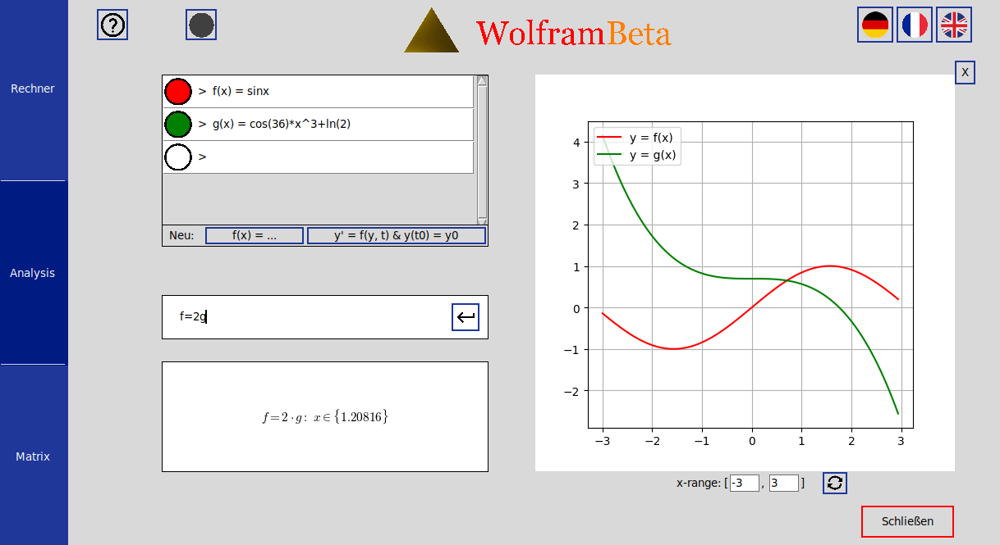

A gauche, dans les différentes lignes, on peut soit donner des fonctions, soit calculer approximativement des équations différentielles.
pour les résoudre :
Pour enregistrer des fonctions, il est possible d'entrer une expression de fonction.
Alors, un nom et une couleur correspondants sont générés pour la fonction.
Puis, la fonction est représenté graphiquement à droite.
La fonction peut être modifiée ultérieurement et sa visibilité activée/désactivée par l'en-tête à gauche de la fonction.
Pour résoudre des équations différentielles, on entre une fonction dépendant de y(t) et de t, et une valeur de départ.
Elle doit avoir la forme y' = f(y, t) & y(t_0) = y_0.
| Expressions | Functions | Exemples |
|---|---|---|
| cos, arccos, cosh, arccosh, sin, arcsin, sinh, arcsinh, tan, arctan, tanh, arctanh |
Opérateurs élementairs | cos(pi) |
| exp(x) ou e^x | Exponentialfunktion | e^4 |
| pow(a, b), a^b ou a**b | Puissance | pow(3, 7), 3^7, 3**7 |
| sqrt(x) ou root(x, n) | Fonction racine | sqrt(2), root(18, 5) |
| ln(x) | logarithme népérien | ln(2) |
| log(x, n) | logarithme (de base n) de x | log(10, 2) |

Sous les lignes de saisie, on peut effectuer des calculs spécifiques à la fonction. On peut y afficher, entre autres, les points d'inflexion, les racines ou les dérivées des fonctions enregistrées. Il est également possible d'effectuer des opérations arithmétiques entre les termes de ces la fonction.
| Expressions | Fonctions | Exemples |
|---|---|---|
| min(f, a, b), max(f, a, b) | Calcule le minimum/maximum de f sur [a;b]. | min(sin^2 - cos(5*x), 0.5, 0.7) |
| racines(f, a, b) ou f=0 | Calcule les racines de f sur [a;b]. | racines(x^3-x*sin(x),0,2) |
| Int(a, b, f(x), x) | Calcule l'intégrale de f sur l'intervalle [a; b] avec variable x. | Int(3,4,ln(x)/x,x) |
| d/dx(f(x)) | Dérivée de f(x). | d/dx(sqrt(1-cos(x)^2)) |
| d^n/dx^n(f(x)) | n-ième dérivé exacte de f(x). | d^3/dx^3(ln(sin(x)^2 + 1)) |
| d^n/dx^n(f(x))(x_0) | n-ième dérivé approximative de f en x_0. | d^3/dx^3(sin(exp(x^2)))(5) |
Pour les fonctions comme min, max et racines, il n'est pas nécessaire d'indiquer l'intervalle [a;b] : Si vous omettez a et b lors de l'appel des fonctions, l'intervalle affiché sous le graphique (que l'on peut d'ailleurs modifier librement) est pris comme intervalle par défaut.

Le schéma de Neville permet de trouver un polynôme qui passe par tous les points que l'on spécifie.
Dans la saisie, entrez par exemple ce qui suit :
neville((2, 3), (4, 8), (9, 0))
Les points donnés et le polynôme trouvé sont alors affichés sur le graphique.